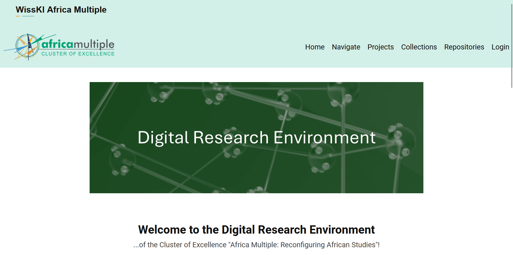
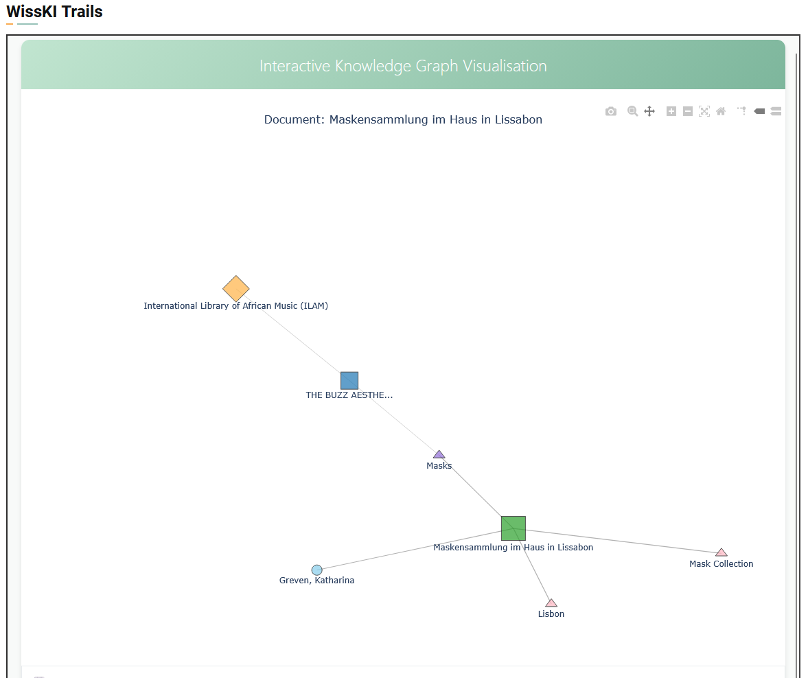

Reimagining the Archive in the Post-Truth Era · Rhodes University, Makhanda · 1 July 2026
Reconfiguring the Archive
Relationality and discovery in the Africa Multiple Interactive Research Atlas (AMIRA)
Frédérick MadoreData CuratorAfrica Multiple Cluster of Excellence
University of Bayreuth · German Excellence Strategy · since 2019
The Africa Multiple Cluster of Excellence
A large African studies cluster, reconfiguring the field both conceptually and structurally to confront power imbalances in how knowledge is produced and transmitted.
Three working concepts
Multiplicity: relationships before fixed entities
Relationality: worlds made, unmade, silenced
Reflexivity: our own positions, and the power behind them
In figures
300+Researchers, cluster-wide
5Research Centres, five countries
2026–32Second phase, under way
Known within the cluster as
"Reconfiguring African Studies" — reworking the field's concepts and its structures at once.
About us · Africa Multiple Research Centres (AMRCs)
Curation and description are shared with our AMRC partners. Each centre describes the data it knows best; the DRE runs the shared infrastructure that connects them.
Storage stays distributed
Data stays in its local repository; Bayreuth holds the metadata layer that points to it. Research data becomes findable without being relocated.
Not an extractive model
A considered response to debates on data colonialism and extractivism: the field's material is not drawn from Africa onto a server in Germany.
The first phase
We began with WissKI
A semantic research-data system built on knowledge graphs — entities and their relations, tied to shared ontologies.
WissKI — Wissenschaftliche Kommunikationsinfrastruktur, "scientific communication infrastructure".

Searching and exploring research data across the centres.

Records as a knowledge graph: entities linked by typed relations.
The new platform · replacing WissKI@UBT
Enter AMIRA
The Africa Multiple Interactive Research Atlas — the Cluster's new home for its research data, publications and outputs.
Browse
Items, people, projects, publications and media — with type-ahead autocomplete and faceted filters.
Visualise
Maps, network graphs and charts across the whole collection — not one record at a time.
Cross-linked
Every person, project, subject and place is its own page you can open.
Now liveBuilt on Omeka S
Scan to explore AMIRAdata.africamultiple.uni-bayreuth.de
Here an entity is the sum of its relationships, rather than a standalone record.
Relationality, one of the cluster's three concepts, treats phenomena as formed through their relationships — and attends to the worlds those relationships leave unmade or silenced.
Relationality, made visible
Connections, not records
data.africamultiple.uni-bayreuth.de/s/amira/item/293Open record ↗
Open a record — here, Prof. Ute Fendler — and AMIRA lists every resource linked to it, each labelled with the nature of the connection.
71linked resources on this record
Projects, publications, co-authors, places and subjects — each its own page, and each link naming the relationship.
Custom Omeka S module · built in-house
Spatial exploration
One of the DRE visualisation modules I build — every georeferenced place in the collection, on one map you can pan, zoom and open.
data.africamultiple.uni-bayreuth.de/s/amira/page/spatial-explorationOpen the map ↗
The whole collection as one network — entities such as people, projects, subjects and places, drawn together by the links recorded between them in the knowledge graph.
The catch, already visible
Every link here was described by someone. The network is only ever as good as that description — and subject description is the thinnest of it.
An atlas of relations is only as strong as its weakest metadata.
The weakest part is almost always subject description — the part that researchers supply the least of all.
When terms do exist
Whose subject headings?
Where subject terms exist, they tend to come from Library of Congress Subject Headings.
Our pipeline matches subjects against the LCSH API
LCSH was built elsewhere, for other collections
African concepts and languages fit it poorly
Borrowed terms reshape what can be found
The vocabulary problem
Two people pick the same term for the same thing under a fifth of the time (Furnas et al., 1987). One imposed vocabulary makes that worse, not better.
Risam (2018): standard schemas can carry epistemic violence — categories that erase as they describe.
Still exploratory
Building the entities the vocabulary lacks
Wikidata, not only Library of Congress
Open, multilingual, editable by communities rather than one national library.
Reconcile people, places, institutions to Wikidata
Create the African entities it still lacks
AI to help, not to decide
Open-source local LLMs draft candidates at scale; people review and approve.
Draft labels, definitions, links for review
Curators and centres keep the final say
Exploratory by design
To move authority over description closer to the people the data is about.
Thank you
Who has the authority to decide how knowledge is described, and therefore how it is found?
In an era of contested truth, this is the challenge that reimagining the archive must face.
 Scan to explore AMIRAdata.africamultiple.uni-bayreuth.de
Scan to explore AMIRAdata.africamultiple.uni-bayreuth.de